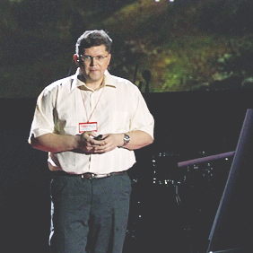
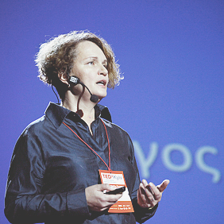
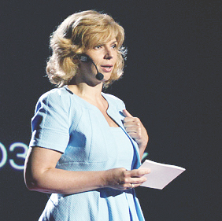

20 травня, у неділю, у приміщенні «Українського дому» (вул. Хрещатик, 2) відбулася шоста конференція ідей, вартих поширення, TEDxKyiv 2012 «Талант. Освіта. Розвиток» для лідерів думок і інноваторів з усіх куточків України та з-поза її меж.
Программа Події
Сесiя#1
Розкриття таланту
-
 Тема Перевинаходячи школу
Тема Перевинаходячи школу
Олексій Грєков
-
 Тема Розвиток таланту
Тема Розвиток таланту
Іван Малкович
-
 Тема Word-class Self-education
Тема Word-class Self-education
Alexei Kapterev
-

Тема Якою повинна бути добра освіта?
Євген Пенцак
-
Олексій Грєков Співзасновник школи «Афіни»
Співзасновник і директор зі стратегічного розвитку Приватної школи «Афіни», який, за його власним визнанням, всім своїм життям розвінчує розхожі міфи: про фізиків і ліриків, про ліво-і правопівкульних талантах. Вчений-фізик, драматург, комп'ютерник, викладач, режисер, винахідник, лазерщики і футуролог. Його улюблений вислів: «Існуючі системи призводять до існуючих результатами. Якщо хочеш досягти чогось іншого – треба докорінно змінити систему!»
Тема спічаПеревинаходячи школу
-
Іван Малкович Поет, видавець, власник видавництва «А-БА-БА-ГА-ЛА-МА-ГА»
Український поет і видавець, власник і директор видавництва «А-БА-БА-ГА-ЛА-МА-ГА», редактор, упорядник, автор та перекладач кількох десятків книжок для дітей. Це людина, маніакально віддана ідеї «особливо якісної української книги». У 2004, 2008, 2009 рр. входить до «ТОП-100 найвпливовіших людей України» щорічного рейтингу журналу «Кореспондент».
Тема спічаРозвиток таланту
-
Alexei Kapterev Moscow-based presentations expert
Moscow-based presentations expert, author of the book "Presentation Secrets" and the world's most famous presentation about presentations "Death by Powerpoint". He is currently teaching presentation skills at the Graduate School of Business at the Moscow State University and running a small private consulting practice
Тема спічаWord-class Self-education
-
Євген Пенцак Директор з інвестицій P&S Asset Management
Ph.D. Lausanne University, директор з інвестицій P&S Asset Management, викладач з фінансової математики та оцінки цінних паперів КМБС і бізнес-школи Львівського Інституту Менеджменту, аналітик веб-сайту InvestAdvisor, учасник багатьох міжнародних конференцій. Розробляв моделі управління та поведінкові стратегії, засновані на надмірній поведінковій реакції учасників ринку і на експертних оцінках великої кількості аналітиків в рамках private banking для швейцарських банків, а також моделі оптимального управління портфелями облігацій для американських пенсійних фондів і стратегії хеджування для приватних інвесторів. Він також є розробником інтелектуальних ігор і пише книгу з розвитку кретаивного мислення.
Тема спічаЯкою повинна бути добра освіта?
Сесiя#2
Шлях до відкриттів
-

ТемаВід наївності до свідомості
Наталя Шульга
-
 ТемаМайбутнє нейронних мереж
ТемаМайбутнє нейронних мереж
Дмитро Дзюба
-
 ТемаЖурналістика даних
ТемаЖурналістика даних
А. Бондаренко
-
 ТемаВибір для наших дітей
ТемаВибір для наших дітей
Марія Башлик
-
Наталя Шульга Директор Українського наукового клубу
Відомий вчений-біолог, директор Українського наукового клубу. Наталья 13 років займалася дослідницькою діяльністю в інституті Рочестера. У 2005 році вона повернулася в Україну, після чого займається питаннями реформування систему освіти і наукових досліджень.
Тема спічаВід наївності до свідомості
-
Дмитро Дзюба Молодший науковий співробітник Інституту Проблем Математичних Машин
Дослідник в лабораторії штучного інтелекту AILEN Lab, молодший науковий співробітник Інституту Проблем Математичних Машин і Систем НАНУ, випускник Фізико-Технічного Інституту при КПІ. Він спеціалізується на рекурентних та асоціативних нейронних мережах, а також займається проблемами нейроуправленія, і алгоритмами комп'ютерного зору. Крім цього координує розробки в галузі робототехніки для експериментальних досліджень створених систем.
Тема спічаМайбутнє нейронних мереж
-
Анатолій Бондаренко Журналіст
Фізик, програміст і журналіст в проекті tedxty.org.ua. У своїй доповіді він розказує про інструменти статистики, візуалізації і інфографіки, які дозволяють вивчати суспільні явища і відкривати їх приховані властивості. У якості прикладів використовуються роботи проекту «Тексти» з даними, які описують діяльність у різних сферах життя українського суспільства.
Тема спічаЖурналістика даних
-
Марія Башлик Засновник Лабораторії наукових розваг "Весела наука"
Психолог, засновник Лабораторії наукових розваг "Весела наука", яка ставить на меті повернення сучасним дітям інтересу до наукових знань, дослідів і експериментів.
Тема спічаВибір для наших дітей
Сесiя#3
Талант у дії
-
 ТемаМіська навігація
ТемаМіська навігація
І. Скляревський
-
 ТемаФеномен фестивалю
ТемаФеномен фестивалю
Лілія Млинарич
-
Ігор Скляревський Дизанер
Дизайнер, творець альтернативної Системи орієнтування в Києві. Він вивчає вплив дизайну міського середовища на якість життя городян і формування міської культури. Ігор розробив свою систему навігації безкоштовно і запропонував її місту, поставивши під сумнів компетентність інтстітути дизайну та ергономіки і кинувши виклик системі відкатів у прийнятті рішень, яка існує в містобудуванні Києва зараз. Навколо його пропозицій сформувалася спільнота і рух однодумців, яке зараз налічує більше тисячі чоловік, активно обговорюють ці ініціатіві на сторінці у Facebook, що пропонує свої рішення і допомагають їх втілювати в життя.
Тема спічаМіська навігація
-
Лілія МлинаричОрганізатор фестивалю Jazz Koktebel
Організатор та ідейний натхненник фестивалю Jazz Koktebel, управлінець і бізнес-консультант. Її виступ - про творчість як шляху до особистісної самореалізації та со-творчості як можливості колективної самореалізації, про те, як процес спільної творчості народжує співтовариство, яке створює подію, яка в свою чергу може змінити місце, де воно відбувається, і людей, які в цьому беруть участь.
Тема спічаФеномен фестивалю
Сесiя#4
Погляд у майбутнє
-
 Тема Успіх-2012
Тема Успіх-2012
Павло Шеремета
-
 Тема Головне – робити
Тема Головне – робити
Анна Петрова
-
 Тема Таланти і суспільство
Тема Таланти і суспільство
Валерій Пекар
-

Тема Іти у майбутнє
Ольга Богомолець
-
Павло ШереметаПартнер Інституту стратегії Inspira
Павло Шеремета є партнером Інституту стратегії Inspira. У минулому Павло працював директором програми МВА МІМ-Київ, керівником проектів Інституту відкритого суспільства Джорджа Сороса у Будапешті, консультантом Віктора Пинзеника. Перший декан Києво-Могилянської Бізнес Школи. Протягом трьох років був Президентом і Старшим Консультантом Інституту Стратегії Блакитного Океану Малайзії.
Тема спічаУспіх-2012
-
Анна Петрова Партнер Інституту стратегії Inspira
Організатор конференції Entrepreholic, Регіональний менеджер Інституту Підприємництва Cisco в Києві. Зараз вона з партнерами працює над створенням центру підтримки і розвитку підприємництва. Історії в її виступі - про молодих людей, які хочуть реалізуватися тут, у своїй країні, і тепер, не чекаючи допомоги держави або випадку
Тема спічаГоловне-робити
-
Валерій Пекар Президент компанії Євроіндекс
Підприємець, публіцист і суспільний діяч. Він є засновником і президентом компанії Євроіндекс, членом команди ВікіСітіНоміка, викладачем Києво-Могилянської Бізнес Школи, активним учасником спільноти, яка займається розробкою нової смислової платформи України.
Тема спічаТаланти і суспільство
-
Ольга Богомолець Заслужений лікар України
Заслужений лікар України, доктор медичних наук, професор кафедри Дерматології та венерології Національного медичного університету ім. О. Богомольця, а також співачка, автор-виконавиця сучасних та старовинних українських романсів, і громадський діяч. Вона є авторкою понад 70 наукових праць і 9 патентів на винаходи у сфері лікування шкірних захворювань. Ольга Вадимівна працює головним лікарем Інституту дерматології та косметології, є координатором Європейської асоціації лазерної дерматології у Східній Європі, членом Американської академії дерматології і Європейської академії дерматовенерології.
Тема спічаІти у майбутнє